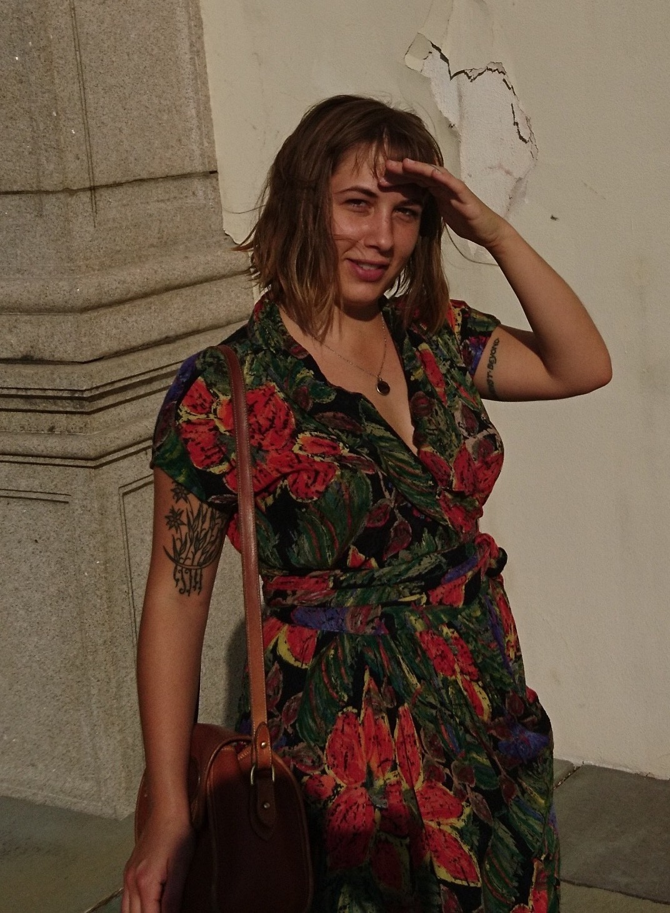

Analeah Loschiavo is a Brazilian-American writer living in Chicago by way of Miami. She received her MFA in Fiction from Washington University in St Louis in 2019. In 2019, she also received a Fulbright Student Research Award to complete a collection of short stories in Lisbon, Portugal. She has been the recipient of Disquiet International’s Luso-American Fellowship Award (finalist, 2018) and Bread Loaf’s Katharine Bakeless Nason Scholarship Award (2018). Additionally, she held a two-year research position with the Mellon Sawyer group, “Grounding the Ecocritical: Materializing Wastelands and Living on in the Middle East," where she focused on nuclear waste sitings. On the side, she has worked as an archivist, bookseller, and AI conversational designer.
